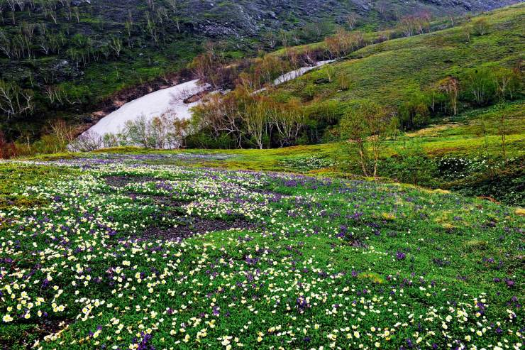
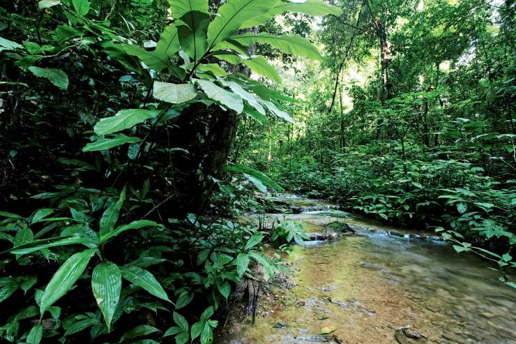
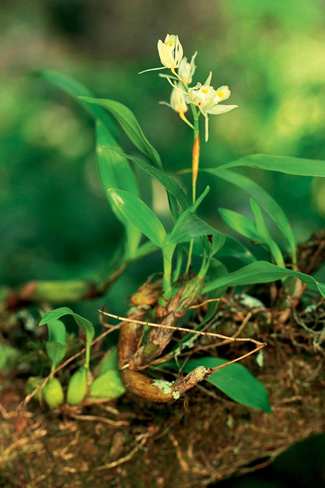
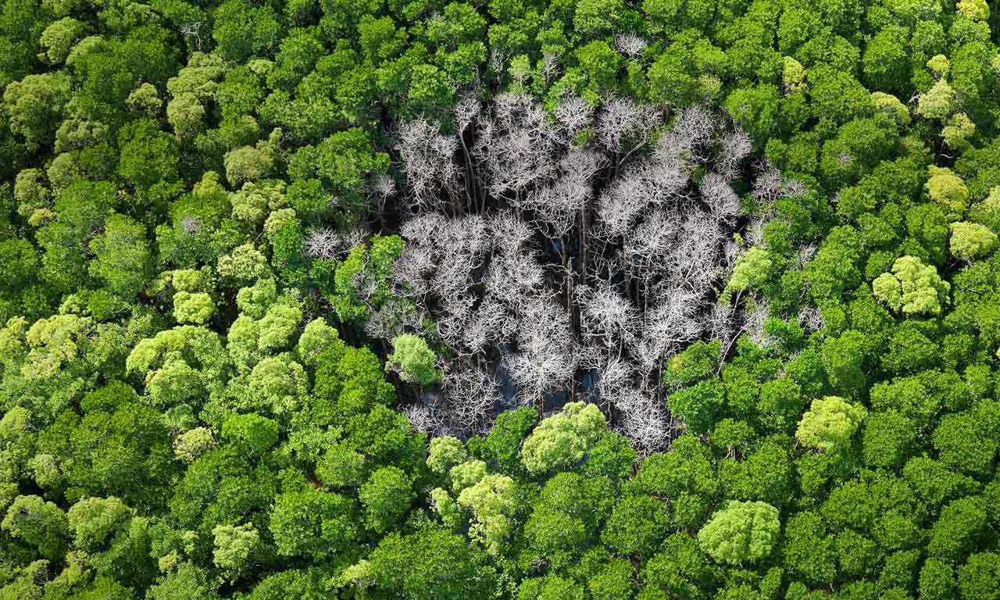
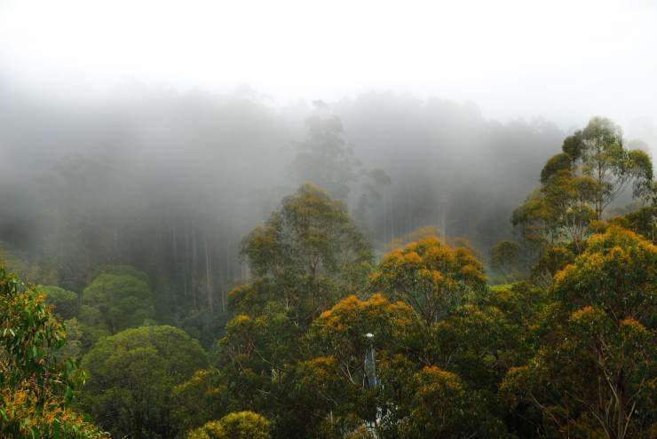
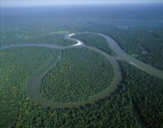

它是人类乃至整个生物界生存活动所不可缺少重要条件，是地球之肺，但就在现在，就在世界的某个地方，它就在被破坏。
雨林是雨量甚多的生物区系。雨林依位置的不同分热带雨林和温带雨林。
雨林大多数靠近赤道，在赤道经过的非洲、亚洲和南美洲都有大片的雨林。
湿润的气候保证了树和植物的快速生产。同时，树和植物也为雨林中的成千上万种生物提供了食物和庇护所。此外还有亚热带雨林，分布在南、北纬10度之间的迎风海岸。该处有雨季和旱季之分，有温度和日照的季节变化。
亚热带雨林的树木密度和树种均较热带雨林稍少。其他雨林类型还有：红树雨林、平原湿地森林和洪泛森林等。
 世界上最大的雨林是位于南美洲的亚马逊热带雨林。
